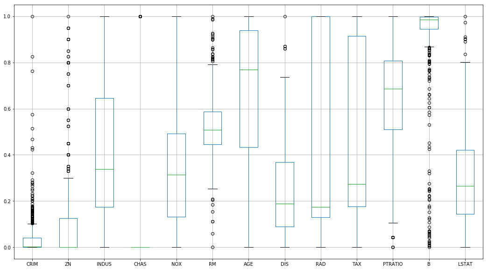
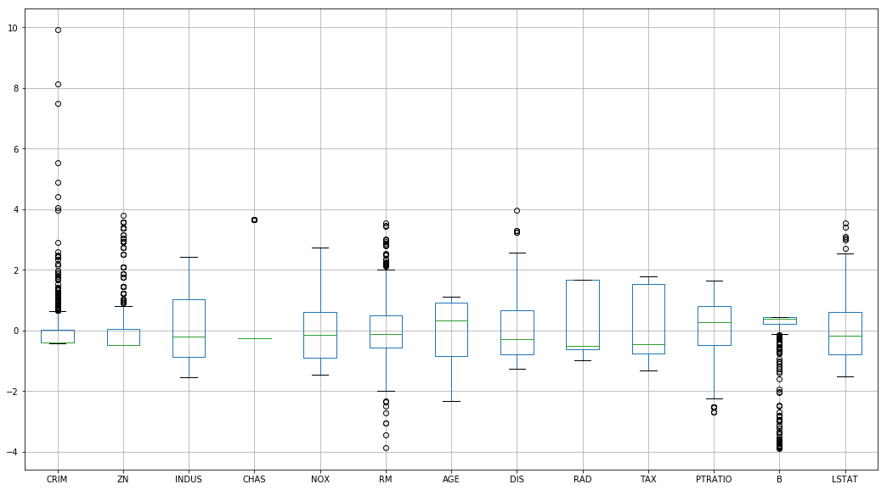

Standardization
Standardizing your data before starting in on machine learning routines is paramount. Not only does it allow your algorithms to converge faster (by delta’ing over a much narrower scope of data), but it also prevents any features scaled arbitrarily larger from having an inflated weight on whatever your model winds up learning.
E.g. a “0, 1, 2 car garage” probably has more predictive power on a home value than “0-10,000” jelly beans could fit in the master bathtub. Probably.
Getting the Data
Loading one of the gimmie datasets from scikitlearn
from sklearn.datasets import load_boston
data = load_boston()
X = data['data']Stuffing into a pandas DataFrame for easier inspection
import pandas as pd
df = pd.DataFrame(X, columns=data['feature_names'])
df.head()| CRIM | ZN | INDUS | CHAS | NOX | RM | AGE | DIS | RAD | TAX | PTRATIO | B | LSTAT | |
|---|---|---|---|---|---|---|---|---|---|---|---|---|---|
| 0 | 0.00632 | 18.0 | 2.31 | 0.0 | 0.538 | 6.575 | 65.2 | 4.0900 | 1.0 | 296.0 | 15.3 | 396.90 | 4.98 |
| 1 | 0.02731 | 0.0 | 7.07 | 0.0 | 0.469 | 6.421 | 78.9 | 4.9671 | 2.0 | 242.0 | 17.8 | 396.90 | 9.14 |
| 2 | 0.02729 | 0.0 | 7.07 | 0.0 | 0.469 | 7.185 | 61.1 | 4.9671 | 2.0 | 242.0 | 17.8 | 392.83 | 4.03 |
| 3 | 0.03237 | 0.0 | 2.18 | 0.0 | 0.458 | 6.998 | 45.8 | 6.0622 | 3.0 | 222.0 | 18.7 | 394.63 | 2.94 |
| 4 | 0.06905 | 0.0 | 2.18 | 0.0 | 0.458 | 7.147 | 54.2 | 6.0622 | 3.0 | 222.0 | 18.7 | 396.90 | 5.33 |
And if you look at each attribute, there’s a huge spread of:
- Relative difference between max and min
- Numeric scale of the attribute
df.describe().T[['max', 'min']]| max | min | |
|---|---|---|
| CRIM | 88.9762 | 0.00632 |
| ZN | 100.0000 | 0.00000 |
| INDUS | 27.7400 | 0.46000 |
| CHAS | 1.0000 | 0.00000 |
| NOX | 0.8710 | 0.38500 |
| RM | 8.7800 | 3.56100 |
| AGE | 100.0000 | 2.90000 |
| DIS | 12.1265 | 1.12960 |
| RAD | 24.0000 | 1.00000 |
| TAX | 711.0000 | 187.00000 |
| PTRATIO | 22.0000 | 12.60000 |
| B | 396.9000 | 0.32000 |
| LSTAT | 37.9700 | 1.73000 |
Approaches
And so we have two ways of resolving this data imbalance.
Normalization
This is essentially ensuring that each column will have values between 0 and 1.
We achieve this by finding out the range of values for each column
spread = df.max() - df.min()
spreadCRIM 88.96988
ZN 100.00000
INDUS 27.28000
CHAS 1.00000
NOX 0.48600
RM 5.21900
AGE 97.10000
DIS 10.99690
RAD 23.00000
TAX 524.00000
PTRATIO 9.40000
B 396.58000
LSTAT 36.24000
dtype: float64
And then, per row, subtracting the minimum value and then dividing by that spread.
normed_df = (df - df.min()) / spread
normed_df.head()| CRIM | ZN | INDUS | CHAS | NOX | RM | AGE | DIS | RAD | TAX | PTRATIO | B | LSTAT | |
|---|---|---|---|---|---|---|---|---|---|---|---|---|---|
| 0 | 0.000000 | 0.18 | 0.067815 | 0.0 | 0.314815 | 0.577505 | 0.641607 | 0.269203 | 0.000000 | 0.208015 | 0.287234 | 1.000000 | 0.089680 |
| 1 | 0.000236 | 0.00 | 0.242302 | 0.0 | 0.172840 | 0.547998 | 0.782698 | 0.348962 | 0.043478 | 0.104962 | 0.553191 | 1.000000 | 0.204470 |
| 2 | 0.000236 | 0.00 | 0.242302 | 0.0 | 0.172840 | 0.694386 | 0.599382 | 0.348962 | 0.043478 | 0.104962 | 0.553191 | 0.989737 | 0.063466 |
| 3 | 0.000293 | 0.00 | 0.063050 | 0.0 | 0.150206 | 0.658555 | 0.441813 | 0.448545 | 0.086957 | 0.066794 | 0.648936 | 0.994276 | 0.033389 |
| 4 | 0.000705 | 0.00 | 0.063050 | 0.0 | 0.150206 | 0.687105 | 0.528321 | 0.448545 | 0.086957 | 0.066794 | 0.648936 | 1.000000 | 0.099338 |
normed_df.describe().T[['min', 'max']]| min | max | |
|---|---|---|
| CRIM | 0.0 | 1.0 |
| ZN | 0.0 | 1.0 |
| INDUS | 0.0 | 1.0 |
| CHAS | 0.0 | 1.0 |
| NOX | 0.0 | 1.0 |
| RM | 0.0 | 1.0 |
| AGE | 0.0 | 1.0 |
| DIS | 0.0 | 1.0 |
| RAD | 0.0 | 1.0 |
| TAX | 0.0 | 1.0 |
| PTRATIO | 0.0 | 1.0 |
| B | 0.0 | 1.0 |
| LSTAT | 0.0 | 1.0 |
However, this handles outlier data… poorly
%pylab inline
_ = normed_df.boxplot(figsize=(18, 10))Populating the interactive namespace from numpy and matplotlib

Standardization
Instead, we’ll try standardization, which substracts the mean from each value and then divides by the standard deviation.
means = df.mean()
meansCRIM 3.593761
ZN 11.363636
INDUS 11.136779
CHAS 0.069170
NOX 0.554695
RM 6.284634
AGE 68.574901
DIS 3.795043
RAD 9.549407
TAX 408.237154
PTRATIO 18.455534
B 356.674032
LSTAT 12.653063
dtype: float64
stand_df = (df - means) / df.std()
stand_df.head()| CRIM | ZN | INDUS | CHAS | NOX | RM | AGE | DIS | RAD | TAX | PTRATIO | B | LSTAT | |
|---|---|---|---|---|---|---|---|---|---|---|---|---|---|
| 0 | -0.417300 | 0.284548 | -1.286636 | -0.272329 | -0.144075 | 0.413263 | -0.119895 | 0.140075 | -0.981871 | -0.665949 | -1.457558 | 0.440616 | -1.074499 |
| 1 | -0.414859 | -0.487240 | -0.592794 | -0.272329 | -0.739530 | 0.194082 | 0.366803 | 0.556609 | -0.867024 | -0.986353 | -0.302794 | 0.440616 | -0.491953 |
| 2 | -0.414861 | -0.487240 | -0.592794 | -0.272329 | -0.739530 | 1.281446 | -0.265549 | 0.556609 | -0.867024 | -0.986353 | -0.302794 | 0.396035 | -1.207532 |
| 3 | -0.414270 | -0.487240 | -1.305586 | -0.272329 | -0.834458 | 1.015298 | -0.809088 | 1.076671 | -0.752178 | -1.105022 | 0.112920 | 0.415751 | -1.360171 |
| 4 | -0.410003 | -0.487240 | -1.305586 | -0.272329 | -0.834458 | 1.227362 | -0.510674 | 1.076671 | -0.752178 | -1.105022 | 0.112920 | 0.440616 | -1.025487 |
This, of course, leads to data that falls out of our neat, [0:1] range
stand_df.describe().T[['min', 'max']]| min | max | |
|---|---|---|
| CRIM | -0.417300 | 9.931906 |
| ZN | -0.487240 | 3.800473 |
| INDUS | -1.556302 | 2.420170 |
| CHAS | -0.272329 | 3.664771 |
| NOX | -1.464433 | 2.729645 |
| RM | -3.876413 | 3.551530 |
| AGE | -2.333128 | 1.116390 |
| DIS | -1.265817 | 3.956602 |
| RAD | -0.981871 | 1.659603 |
| TAX | -1.312691 | 1.796416 |
| PTRATIO | -2.704703 | 1.637208 |
| B | -3.903331 | 0.440616 |
| LSTAT | -1.529613 | 3.545262 |
But does a… marginally better job at handling outliers
stand_df.boxplot(figsize=(18, 10))<matplotlib.axes._subplots.AxesSubplot at 0xc6c7978>

And forces each variable to follow a useful unit distribution with mean 0
stand_df.describe().T[['mean', 'std']]| mean | std | |
|---|---|---|
| CRIM | 1.144232e-16 | 1.0 |
| ZN | 3.466704e-16 | 1.0 |
| INDUS | -3.016965e-15 | 1.0 |
| CHAS | 3.999875e-16 | 1.0 |
| NOX | 3.563575e-15 | 1.0 |
| RM | -1.149882e-14 | 1.0 |
| AGE | -1.158274e-15 | 1.0 |
| DIS | 7.308603e-16 | 1.0 |
| RAD | -1.068535e-15 | 1.0 |
| TAX | 6.534079e-16 | 1.0 |
| PTRATIO | -1.084420e-14 | 1.0 |
| B | 8.117354e-15 | 1.0 |
| LSTAT | -6.494585e-16 | 1.0 |
Using Scikit-Learn
Of course, if we weren’t interested in taking our numpy data, piping it into a pandas.DataFrame, doing our transformations, and then .values‘ing our way back to numpy, sklearn provides a useful class to handle this.
# Again, for demonstration
df.describe().T[['mean', 'std', 'min', 'max']]| mean | std | min | max | |
|---|---|---|---|---|
| CRIM | 3.593761 | 8.596783 | 0.00632 | 88.9762 |
| ZN | 11.363636 | 23.322453 | 0.00000 | 100.0000 |
| INDUS | 11.136779 | 6.860353 | 0.46000 | 27.7400 |
| CHAS | 0.069170 | 0.253994 | 0.00000 | 1.0000 |
| NOX | 0.554695 | 0.115878 | 0.38500 | 0.8710 |
| RM | 6.284634 | 0.702617 | 3.56100 | 8.7800 |
| AGE | 68.574901 | 28.148861 | 2.90000 | 100.0000 |
| DIS | 3.795043 | 2.105710 | 1.12960 | 12.1265 |
| RAD | 9.549407 | 8.707259 | 1.00000 | 24.0000 |
| TAX | 408.237154 | 168.537116 | 187.00000 | 711.0000 |
| PTRATIO | 18.455534 | 2.164946 | 12.60000 | 22.0000 |
| B | 356.674032 | 91.294864 | 0.32000 | 396.9000 |
| LSTAT | 12.653063 | 7.141062 | 1.73000 | 37.9700 |
from sklearn.preprocessing import StandardScaler
scaler = StandardScaler()
scaler.fit(X)StandardScaler(copy=True, with_mean=True, with_std=True)
pd.DataFrame(scaler.transform(X)).describe().T[['mean', 'std', 'min', 'max']]| mean | std | min | max | |
|---|---|---|---|---|
| 0 | 6.340997e-17 | 1.00099 | -0.417713 | 9.941735 |
| 1 | -6.343191e-16 | 1.00099 | -0.487722 | 3.804234 |
| 2 | -2.682911e-15 | 1.00099 | -1.557842 | 2.422565 |
| 3 | 4.701992e-16 | 1.00099 | -0.272599 | 3.668398 |
| 4 | 2.490322e-15 | 1.00099 | -1.465882 | 2.732346 |
| 5 | -1.145230e-14 | 1.00099 | -3.880249 | 3.555044 |
| 6 | -1.407855e-15 | 1.00099 | -2.335437 | 1.117494 |
| 7 | 9.210902e-16 | 1.00099 | -1.267069 | 3.960518 |
| 8 | 5.441409e-16 | 1.00099 | -0.982843 | 1.661245 |
| 9 | -8.868619e-16 | 1.00099 | -1.313990 | 1.798194 |
| 10 | -9.205636e-15 | 1.00099 | -2.707379 | 1.638828 |
| 11 | 8.163101e-15 | 1.00099 | -3.907193 | 0.441052 |
| 12 | -3.370163e-16 | 1.00099 | -1.531127 | 3.548771 |